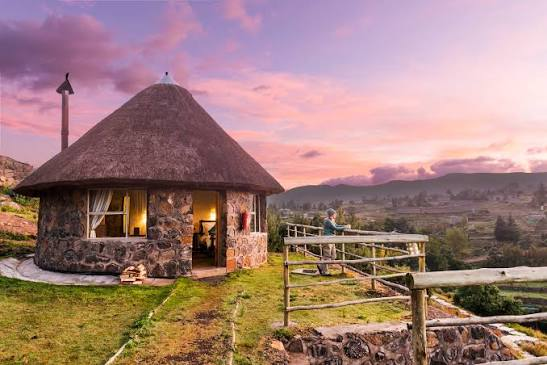
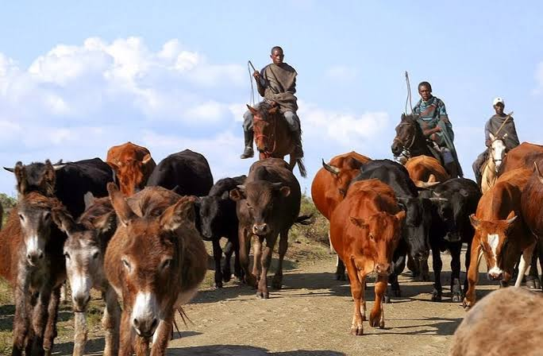

A mountain town shaped by seasons, livestock and the Basotho nation.
Semonkong, “Place of Smoke” in Sesotho, is a small town in the Maseru District, ringed by highlands, deep valleys and waterfalls. Its people belong to the Basotho nation, united in the early nineteenth century by King Moshoeshoe I, whose legacy built strong traditions of cooperation, livestock farming and storytelling.
Families here still rely on sheep, goats, cattle and horses, plus small-scale farming and crafts. Basotho ponies remain the best way through remote areas where roads give out. Music, dance, initiation customs, oral history and the Sesotho language hold community life together, and tourism now brings visitors for the scenery, pony trekking and a look at rural Basotho life.


| Season | Months | Highlights |
|---|---|---|
| Summer | December–February | Waterfalls, hiking, pony trekking and green mountain scenery |
| Autumn | March–May | Scenic walks, photography and outdoor exploration |
| Winter | June–August | Possible snow, frosty scenery and traditional horse racing |
| Spring | September–November | Warmer weather, outdoor adventures and the Maletsunyane Braai Festival |